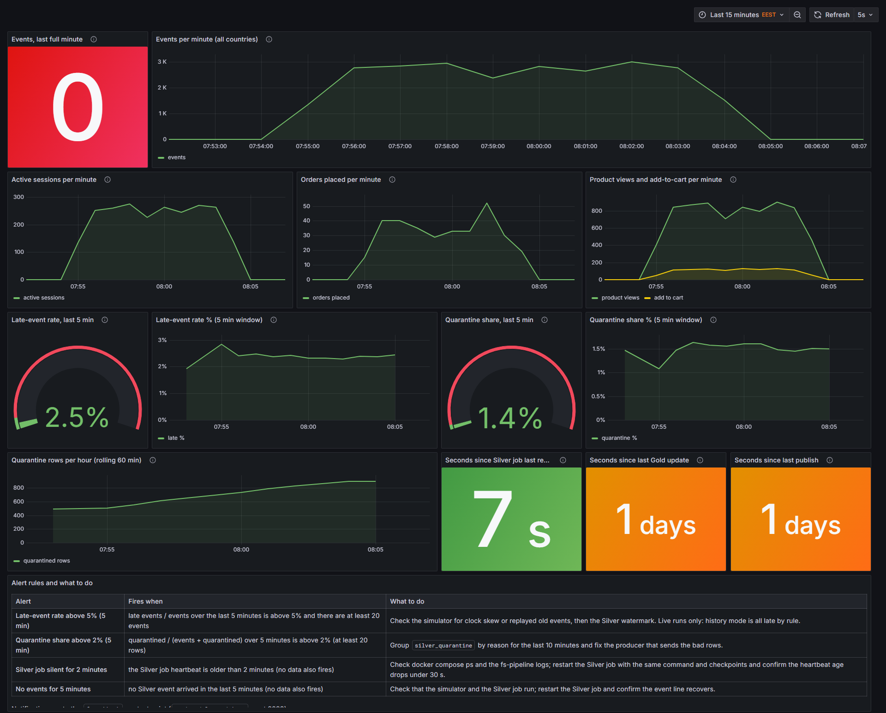
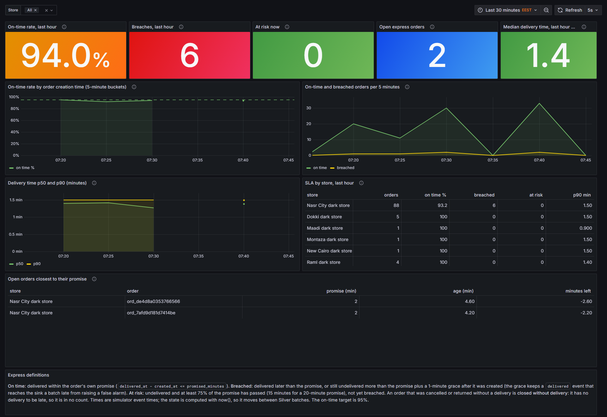
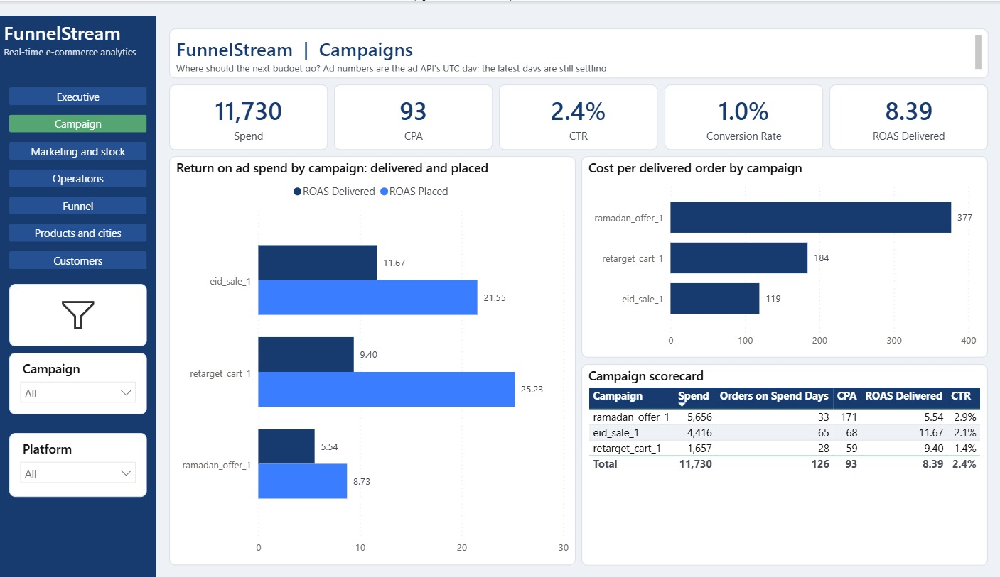
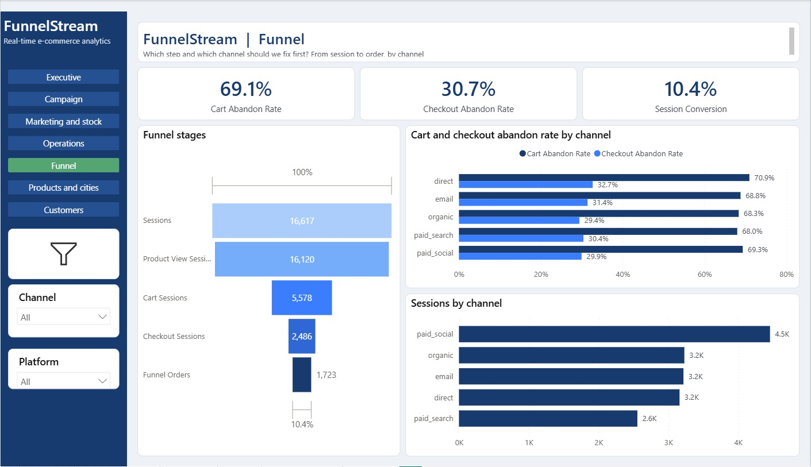
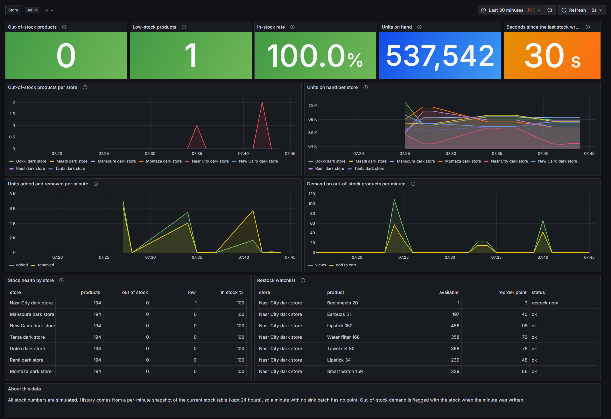

FunnelStream
Real-time e-commerce and campaign analytics: from the first click to the next morning's report
Kafka | Spark | Delta | Databricks | Postgres | Grafana | Power BI
The FunnelStream team
Project defense, 20 minutes
16,617
Sessions
16,120
Product views
5,578
Cart
2,486
Checkout
1,723
Orders
Funnel page of the Power BI report. The data is simulated: 16,617 sessions end in 1,723 orders (10.4%).
1 BUSINESS CONTEXT
Three questions a store cannot answer from one place
FunnelStream
2
1
Which campaign really pays?
Ads are paid per click, but cash-on-delivery orders are often cancelled or fail delivery. Return on ad spend measured on placed orders overstates the result.
2
Where do shoppers drop out?
View, cart, checkout, order. Which step, on which channel and platform, should be fixed first?
3
What needs action right now?
Which products and dark stores are out of stock, is the 20-minute express promise holding, and is advertising still sending shoppers to empty shelves?
Operations user
Acts within a minute. Needs live traffic, real stock and the express promise.
Marketing user
Reads yesterday each morning. Needs trusted campaign, funnel and sales numbers.
1 BUSINESS CONTEXT
One stream of events, two lanes, two users
FunnelStream
3
The online store
Customers browse, add to cart, check out
Orders are packed, shipped, delivered, cancelled or returned
Eight dark stores hold stock
Campaigns bring the traffic
All simulated
Kafka, Bronze, Silver
Every event is kept raw.
Then checked, typed and deduplicated once.
One trusted copy feeds both lanes.
Live lane: seconds to a minute
Postgres and Grafana, 8 alert rules.
For operations: which product is out of stock, is express on time, is the pipeline healthy.
Batch lane: next morning
Databricks Gold with 66 quality checks, Power BI.
For marketing: spend, ROAS, funnel, customers, delivered revenue.
The bridge only a joined platform can make: advertising spend sent to products that were out of stock
2 ARCHITECTURE AND DATA ENGINEERING
End-to-end architecture
FunnelStream
4
Simulator
app events, orders, deliveries, stock of 8 dark stores
Mock ad API
Meta and Google campaigns
Kafka
4 topics, KRaft mode
Airflow
daily ad report, 03:00 UTC
Spark Structured Streaming, in Docker
Bronze
raw messages, append-only
Silver
validated, deduplicated, Delta MERGE
Quarantine
rejected rows, with a reason
LIVE LANE | within a minute
Live sink + Postgres
16 live and serving tables
Grafana
6 dashboards, 8 alerts
BATCH LANE | next morning
Databricks
Gold star schema, 66 checks
Power BI
7 pages, 103 measures
Daily marts in Postgres
inventory, express, D-1 marketing
Everything left of Databricks runs on one Windows laptop in Docker. Gold is written only by the Databricks build.
2 ARCHITECTURE AND DATA ENGINEERING
Data sources and ingestion: a seeded, noisy store simulator
FunnelStream
5
App and web events
Product view, cart, checkout, purchase. Anonymous sessions are keyed by session_id.
Orders and deliveries
Created only after checkout. Full lifecycle with cancel, return and failed delivery.
Stock events
Snapshots and movements for 8 dark stores. Stock never goes below zero.
Mock ad API
Meta and Google campaigns, pulled daily by Airflow into Silver.
Egyptian realism
EGP, cash on delivery, Fawry, Vodafone Cash, InstaPay; Bosta, Aramex, J&T; Ramadan and Eid peaks; business day in Cairo time.
One envelope for every event
{
"event_id": ...,
"event_type": ...,
"event_version": ...,
"event_time": ...,
"payload": { ... }
}
Noise on purpose, seeded and counted
1% duplicate events, 0.3% malformed JSON, 2% late events, 3% dirty city text, bots, out-of-order order status.
A noise manifest records what was injected. After Silver, the quarantine count must match it.
2 ARCHITECTURE AND DATA ENGINEERING
Streaming: Kafka decouples producers from processing
FunnelStream
6
Producers
The simulator. acks=all and idempotent, so a retry never writes twice.
Kafka 3.7, KRaft, 4 topics
Keeps messages while the job is down. Replays after a crash.
Consumer: the Spark job
Reads each topic in micro-batches. Its checkpoints hold the committed offsets, so a restart resumes where it stopped.
| Topic | Carries | Key | Partitions |
|---|---|---|---|
| app.events | 10 app and web event types | session_id | 6 |
| orders | 7 order status events | order_id | 3 |
| delivery.events | 3 delivery events | order_id | 3 |
| inventory.events | stock snapshots, movements | store_id | 3 |
Keys keep order. All events of a session, or of an order, go to one partition in sequence.
Producers and the lake never talk to each other. Either side can fail or be replaced.
Replay is safe. Silver writes are idempotent, so reading a message twice changes nothing.
2 ARCHITECTURE AND DATA ENGINEERING
Processing: from a raw message to a trusted row
FunnelStream
7
One event, end to end: an order_created message on the orders topic
1
Kafka
A new order. Topic orders, key order_id.
2
Bronze
Raw value plus partition, offset and ingest time. Nothing changed, nothing dropped.
3
Validate
Schema contract per event type. A bad row goes to quarantine with an error code.
4
Silver
Typed, UTC, deduplicated on event_id, written with a Delta MERGE. Status by rank.
5
Consumers
Live sink: Postgres within a minute. Publish: Databricks, then Gold.
Rejected rows go to quarantine with one of these reasons
BAD_JSON
MISSING_FIELD
UNKNOWN_EVENT_TYPE
BAD_VERSION
NEGATIVE_PRICE
FUTURE_TIMESTAMP
UNKNOWN_PRODUCT
Evidence, 13 October 2026: quarantine count matched the noise manifest (308 expected, 308 observed). Replaying Bronze left all 10 Silver tables unchanged.
2 ARCHITECTURE AND DATA ENGINEERING
Storage: three layers, three places
FunnelStream
8
Bronze
raw, never changed
bronze_app_events
6 partitions of raw messages
bronze_orders
order status messages
bronze_delivery_events
delivery messages
bronze_inventory_events
stock messages
Silver
trusted, one row per key
silver_events
one app event
silver_orders, _status, _items
order, status change, line
silver_stock_*, _express_orders
stock and express
silver_quarantine
rejected rows
Gold
business ready, Databricks
fact_orders, _lines, _attribution
last and first touch
dim_customer, dim_product
slowly changing (SCD2)
agg_orders, funnel, campaign, city_product
daily aggregates
customer_360
one row per customer
Local lake
Bronze and Silver: Delta folders on disk, rebuildable
Databricks, Unity Catalog
Silver mirror and 12 Gold tables
Postgres 16
16 live and serving tables, daily marts
2 ARCHITECTURE AND DATA ENGINEERING
Reliability: crash, duplicates, late and bad data
FunnelStream
9
| When this happens | this protects the data |
|---|---|
| The Spark job is killed | Checkpoints hold the Kafka offsets. The restart resumes from them. |
| A message arrives twice | Silver MERGE on the key inserts nothing the second time. |
| An event arrives late | Flagged is_late. Left out of live metrics, corrected by the batch. |
| A row is bad | Quarantined with a reason. Never in the numbers. |
| Databricks is unavailable | A second Gold store backend loads the tables into Postgres. |
Airflow: ads_yesterday_report
Runs at 03:00 UTC. Pulls the ad API once for yesterday and stores a snapshot. Retries on HTTP 503. A rerun returns the stored report without calling the API.
Failure demo, measured twice
NO DUPLICATES
Alert "Silver job silent" fired 2 min 12 s and 2 min 54 s after the kill. The promise is within 3 minutes.
The check covers Silver only.

3 OBSERVABILITY AND BUSINESS INTELLIGENCE
Grafana: is the pipeline alive and clean?
FunnelStream
10
What the engineer reads
Traffic. Events, active sessions and orders per minute show whether the stream is alive.
Quality. Late-event rate 2.5% and quarantine share 1.4% sit under the alert limits of 5% and 2%.
Liveness. The Silver job reported 7 seconds ago. No report for 2 minutes fires an alert.
Batch lane. Gold update and publish age show 1 day in this capture, because the batch runs on demand.
Alert table. Each rule says when it fires and what to do.
Grafana, Pipeline live, captured at the end of the 13 October 2026 rehearsal. The generator had just stopped, so events per minute is 0.

3 OBSERVABILITY AND BUSINESS INTELLIGENCE
Grafana: is the 20-minute express promise holding?
FunnelStream
11
What operations reads
On-time rate 94.0% against the 95% target, so the tile is orange.
6 breaches in the last hour, 0 orders at risk now, 2 open express orders.
By store and by order. The table names the store, the open orders closest to their promise and the minutes left.
Rehearsal setting. The promise was 2 minutes and some express orders were forced late, so that a breach and its alert can be shown live.
Grafana, Express SLA, rehearsal of 13 October 2026 with the promise shortened to 2 minutes.

3 OBSERVABILITY AND BUSINESS INTELLIGENCE
Power BI: where should the next budget go?
FunnelStream
12
What marketing reads
Headline ROAS is on delivered orders: 8.39. On placed orders it is higher everywhere (eid_sale_1: 21.55 placed, 11.67 delivered), because cash-on-delivery orders cancel or fail.
Cost per delivered order: 377 for ramadan_offer_1, 184 for retarget_cart_1, 119 for eid_sale_1.
A possible decision: move budget toward eid_sale_1 and question ramadan_offer_1. Attribution is last touch, so it is a lead, not proof.
Power BI, Campaigns page. Simulated data. Ad numbers use the ad API's UTC day.

3 OBSERVABILITY AND BUSINESS INTELLIGENCE
Power BI: the bridge, ad spend sent to empty shelves
FunnelStream
13
What the bridge shows
Exposed spend 378, 10.1% of spend: estimated spend that landed on products out of stock.
10.2% of landing clicks went to out-of-stock products. Revenue at risk: 71,653.
All three at-risk products are in one store: Nasr City dark store (Hijab set 33, Towel set 40, Abaya 53).
Label it honestly: a shopper may buy a substitute, so this is exposure, not loss.
Power BI, Marketing and stock page, day minus one. Simulated data. An estimate, not a measured loss.
3 OBSERVABILITY AND BUSINESS INTELLIGENCE
From a stock-out to next morning's report
FunnelStream
14
1
Stock runs out
A hero product at Nasr City reaches available = 0, about 4 minutes into the demo run.
2
Demand continues
Shoppers still view it and add it to the cart. Empty stock does not stop demand.
3
Live sink flags it
Each demand minute is marked: out of stock when the minute was written.
4
Alert fires
Grafana alert on demand for out-of-stock products fires 1 minute after the stock-out.
5
Restock
About 2 minutes after the stock-out. The out-of-stock count falls to 0.
6
Next morning
The D-1 mart prices the exposure. Power BI shows exposed spend and revenue at risk.
How the next morning's number is computed
oos_click_share
= out-of-stock landing clicks / served landing clicks
exposed_spend
= spend x oos_click_share
revenue_at_risk
= add-to-carts on out-of-stock products x price
Measured on 12 October 2026 on the demo: Galabeya 61 at the Nasr City dark store, stock-out at 21:16:14 Cairo time, alert 1 minute later, restock about 2 minutes later. Simulated data.
4 QUALITY AND CLOSE
Quality and measured results
FunnelStream
15
1,169
host tests passed, 0 failed
13 Oct 2026
217
Spark tests passed in Docker, 22 files
12 Oct 2026
66
data quality checks, 0 failed, on the Gold build
scratch catalog, 13 Oct
654.73 s
for 1,000,000 simulated events through the whole pipeline
one laptop, 12 Oct
2 of 2
kill and restart runs ended with NO DUPLICATES
12 Oct 2026
How to read these numbers
The benchmark measures one setup (Docker limited to about 8 GB, a Databricks Free Edition SQL warehouse). It is not a capacity claim.
Still open on 13 October
One uninterrupted green run of the full smoke test with the Spark stage. The stages passed in two parts, and the three failures of the first run were fixed in the test scripts.
4 QUALITY AND CLOSE
What FunnelStream shows, and what comes next
Shown
A streaming pipeline that survives a crash without duplicates
Bad data quarantined with a reason, counted against the injected noise
Two audiences served from the same events
The bridge: exposed ad spend
Honest limits
All data is simulated
Exposed spend is an estimate
Stock is not put back on cancel or return
Measured on one setup: one laptop, Databricks Free Edition
Next
Replay-safe stock intervals from Silver
Stock reversal on cancel and return
Great Expectations or dbt on the SQL checks
Delivery zones and a Store dimension in Gold
Thank you. Questions?

BACKUP
Power BI: Executive page
FunnelStream
17
What it shows
Revenue placed 2,410,979, delivered 1,914,103: 79.4% delivered share, 5.8% cancel rate.
One-day peak on 9 October holds about 55% of all revenue in the simulated data. The page says so.
Where orders leak: failed-attempt rate is highest for vodafone_cash (27.6%) and fawry (25.1%).
Power BI, Executive page. Simulated data.

BACKUP
Power BI: Funnel page
FunnelStream
18
What it shows
16,617 sessions end in 1,723 orders: 10.4% session conversion.
Cart abandon rate 69.1%, checkout abandon rate 30.7%.
By channel: direct has the highest cart abandon rate (70.9%); paid_social brings the most sessions (4.5K).
Power BI, Funnel page. Simulated data.

BACKUP
Grafana: live stock monitor
FunnelStream
19
What operations reads
537,542 units on hand, 0 out-of-stock products, 1 low-stock product, in-stock rate 100%.
Restock watchlist: Bed sheets 20 at Nasr City has 1 unit against a reorder point of 3: restock now.
Demand on out-of-stock products per minute is the live version of the bridge.
Grafana, Live stock monitor, rehearsal of 13 October 2026. All stock numbers are simulated.

BACKUP
Failure demo: kill, alert, restart, no duplicates
FunnelStream
20
Measured twice, 12 October 2026
Alert fired 2 min 12 s and 2 min 54 s after the kill.
Heartbeat back under 30 s about 40 s and 35 s after the restart.
NO DUPLICATES: 8,469 events and 16,404 events in Silver.
Scope: Silver only. It does not prove that no event was lost.